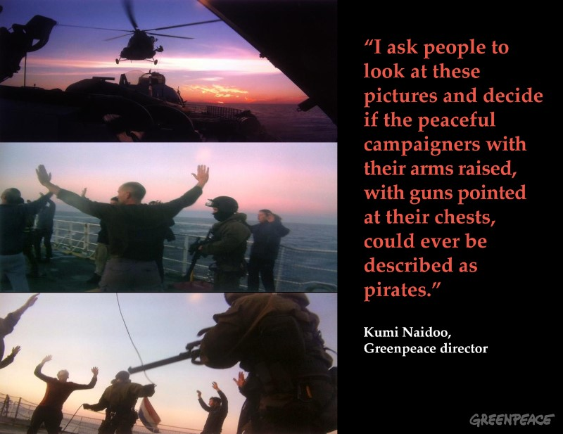
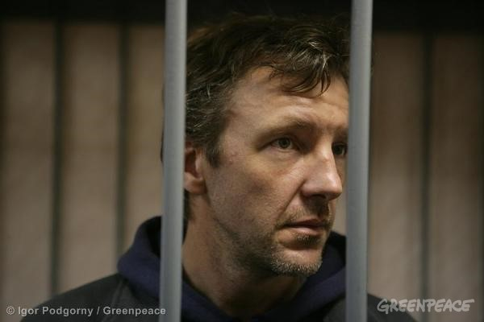
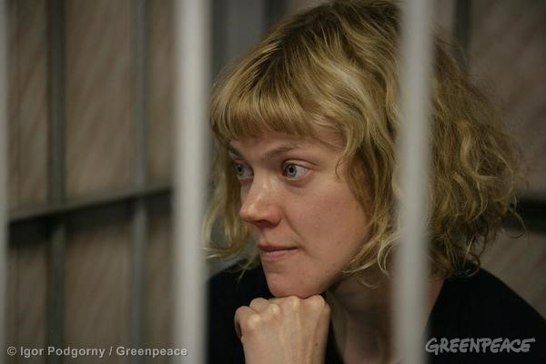
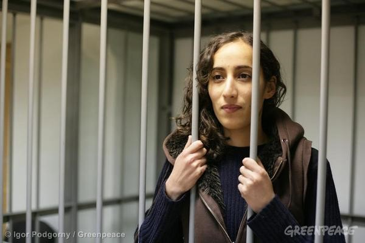
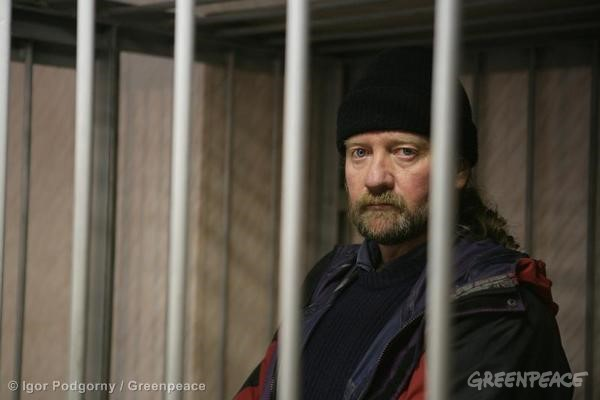
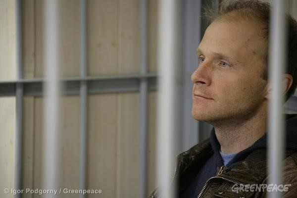
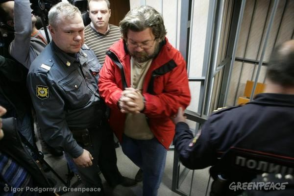
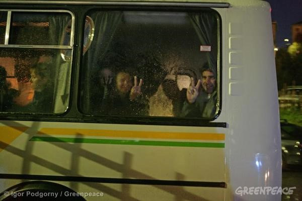
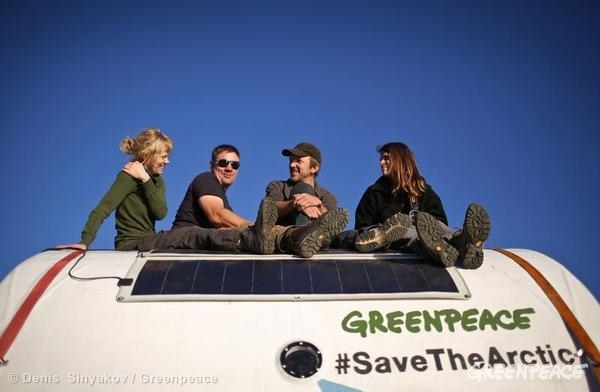
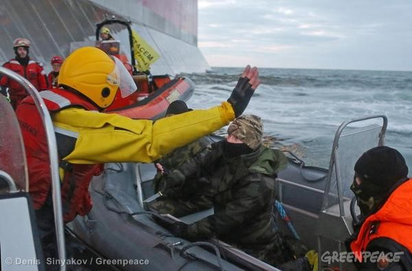

October 09, 2013
17.00 - Greenpeace International responds to claims by Russia’s Investigative Committee that the Arctic 30 activists endangered the safety of Russian security officers by ramming their dinghy:
“Greenpeace International has today published a slow motion video of an incident in which a Greenpeace boat comes to assist another one being harassed by armed security forces.”
15.00 - Greenpeace International responds to allegations made by the Russian Investigative Committee that narcotics were found on board the Arctic Sunrise:
“Before leaving Norway for the Russian Arctic, the ship was searched with a sniffer dog by the Norwegian authorities, as is standard. The laws in Norway are amongst the strictest in the world, and nothing was found because nothing illegal was on the ship. “
10.00 - The appeal to release Greenpeace International activist Roman Dolgov on bail is rejected by the Regional Court of Murmansk.
08.00 - Executive Director of Greenpeace International Kumi Naidoo writes a letter to the Russian President, Vladimir Putin. In the letter, delivered to the Russian embassy in The Hague, Naidoo writes:
"I would offer myself as a guarantor for the good conduct of the Greenpeace activists, were they to be released on bail" and offers to "move [his] life to Russia for the duration of this affair."
A soundbite of Kumi Naidoo explaining his letter can be found here.
October 08, 2013
16.30 - Greenpeace International Executive Director, Kumi Naidoo, reacts to Greenpeace International activists and a freelance photographer being denied bail by the the Regional Court of Murmansk.
16.15 - The appeal to release activist Andrey Allakhverdov on bail is rejected by the Regional Court of Murmansk.
14.30 - The appeal to release freelance photographer Denis Sinyakov on bail refused by the Regional Court of Murmansk.
14.09 - 18 pages of signatures of Russian journalists requesting the immediate release of Denis Sinyakov handed to the judge.
13.01 - The appeal to release crew member Ekaterina Zaspa on bail refused by the Regional Court of Murmansk.
October 07, 2013
Greenpeace International reveals that it intends to file a criminal complaint with the police over the illegal seizure of its ship the Arctic Sunrise. The lawyers of the 30 detainees are filing complaints over the violations of the rights of the 30 detainees to the relevant authorities.
14.30 - A video from the interrogation of Captain Peter Willcox by the Investigative Committee on the Arctic Sunrise on Friday September 28 is released.
12.00 - A Greenpeace press conference is held in Murmansk to discuss the detention conditions and legal status of the Arctic 30. It can be viewed here.
October 05, 2013
A global Emergency Day of Solidarity to free the Arctic 30 (#freethearctic30). Thousands of people engaging in 220 solidarity events in 48 countries.
You can view the slideshow of events across the globe here.
October 04, 2013
17.00 - Executive Director Kumi Naidoo broadcast a live conversation about the Arctic 30 and the future of the Arctic on Google Hangout. If you missed it, you can watch it here: http://bit.ly/1dZofVb
14.40 - The Dutch government today announced that it would initiate arbitration proceedings against Russia under the UN Convention of the Law of the Sea to secure the release of 28 Greenpeace International activists, plus a freelance photographer and a freelance videographer, currently being detained in Russia on piracy charges.
In response, Greenpeace International’s General Counsel Jasper Teulings said:
"Greenpeace International applauds the Dutch government decision as flag state of the Arctic Sunrise in taking the necessary legal steps to gain the release of the Arctic Sunrise and the Arctic 30, who are being unjustly held. The Netherlands is taking a strong stance in support of the rule of law and the right to peacefully protest. Russian officials will now be called to explain their actions before an international court of law, where it will be unable to justify these absurd piracy allegations."
October 03, 2013
18.00 - A further 15 Greenpeace International activists and a Russian freelance photographer were today charged with piracy in Murmansk. This means that all 28 activists from the Greenpeace ship Arctic Sunrise, as well as two freelancers, now face the charge. If convicted, the offence carries a maximum 15 year jail term.
Lawyers acting on behalf of Greenpeace International have now lodged formal appeals in the Murmansk Lenin district court against the continued detention of the Arctic 30.
Greenpeace International is taking its efforts to highlight the case, free the activists and protect the Arctic to a global level. On Saturday, 5th October tens of thousands of people will take part in an emergency global day of solidarity. Peaceful events are planned in more than 80 cities in 45 countries across the world.
16.00 - Captain Peter Willcox from the US, Crew member Paul D. Ruzycki from Canada, Crew member Iain Rogers from UK, Activist Frank Hewetson from UK, Activist Marco Weber from Switzerland, and Crew member Gizem Akhan from Turkey are all officially charged with piracy.
15.10 - All 30 appeals against the refusal of setting bail for activists and crew has now been filed. We still do not know when the appeal cases will be held but we dont expect them to happen this week.
14.30 - Crew members Miguel Hernan Perez Orzi from Argentina, Francesco Pisanu from France, Alexandre Paul from Canada, David John Haussmann from New Zealand, and Cristian D'Alessandro from Italy are officially charged with piracy.
14.15 - Crew members Colin Russell from Australia and Andrey Allakhverdov from Russia are officially charged with piracy.
12.00 - Freelance photographer Denis Sinyakov from Russia is officially charged with piracy.
11.00 - Crew member Jonathan Beauchamp from New Zealand is officially charged with piracy.
10.00 - Crew member Anne Mie Roer Jensen from Denmark is officially charged with piracy.
09.00 - All 16 detainees who did not receive indictment yesterday appear to have been taken to the Investigative Committee.
October 02, 2013
14.50 - UK activists Alexandra Harris and Philip Ball are officially charged with piracy.
14.30 - Argentinian activist Camila Speziale, Dutch activist Faiza Oulahsen, Dutch crew member Mannes Ubels, Polish activist Tomaz Dziemianczuk, and a Russian crew member are officially charged with piracy.
14.00 - UK activist Anthony Perrett and a Ukranian crew member have been officially charged with piracy.
11.20 - Greenpeace activists in Germany chained themself to a Gazprom gas pump at a petrol station in Berlin at the same time the activists and journalists of the Arctic Sunrise, which had peacefully protested at a Gazprom oil platform, were formally charged with piracy.
10.50 - Russian activist Roman Dolgov, Finnish activist Sini Saarela, and Swedish/American activist Dima Litvinov are officially charged with piracy.
Responding to the news, Greenpeace International executive director Kumi Naidoo said: “A charge of piracy is being laid against men and women whose only crime is to be possessed of a conscience. This is an outrage and represents nothing less than an assault on the very principle of peaceful protest. Any claim that these activists are pirates is as absurd as it is abominable. It is utterly irrational, it is designed to intimidate and silence us, but we will not be cowed."

Photos: http://photo.greenpeace.org/C.aspx?VP3=ViewBox_VPage&ALID=27MZIFVD4JEW&CT=Album
09.50 - Crew member Ana Paula Alminhana Maciel from Brazil and freelance videographer Kieron Bryan from UK are charged with piracy.
October 01, 2013
22.10 - In a letter from her cell in Murmansk, Russia, Faiza Oulahsen writes about her experiences from entering the Greenpeace icebreaker Arctic Sunrise until a few days ago when she along with 29 others lost their freedom to the Russian security forces.
21.00 - Greenpeace activists unfurl a 28m wide banner reading 'Gazprom, Don't Foul The Arctic' at Basel's St. Jakob Park stadium, shortly after kick-off in the Champions League game between FC Basel and Gazprom sponsored, FC Schalke 04. Greenpeace demands that Gazprom (the Russian state-owned company and Champions League sponsor) cease their high-risk oil exploration in the Arctic. The protestors also repeated demands for the release of the 28 Greenpeace International activists, as well as a freelance photographer and a freelance videographer currently in custody pending investigations into a peaceful Arctic oil protest.
18.00 - Greenpeace legal team informed that two activists, Sini Saarela and Dima Litvinov, will be charged on Wednesday 2 October at 08:30 CET
September 30, 2013
17.00 - Legal experts challenge piracy allegations against peaceful Greenpeace activists. Read more here.
September 29, 2013
19.20 - A further eight Greenpeace International activists have been detained for two months in Russia pending an investigation into possible charges of piracy. The eight will join 22 others, including a freelance videographer and freelance photographer, detained on Thursday following a peaceful protest against Arctic oil drilling. Greenpeace International pledged to appeal all 30 detentions.
The 30 have already been held by the Russian authorities for 10 days since the Greenpeace ship Arctic Sunrise was illegally boarded in international waters on Thursday, September 19.
16.40 - Crew member Ana Paula Alminhana Maciel from Brazil is to be held in custody until Nov 24th pending a piracy investigation.
15.45 - Activist Anthony Perrett from Wales, UK, is to be held in custody until Nov 24th pending a piracy investigation.
14.35 - Crew member Mannes Ubels from The Netherlands is to be held in custody until Nov 24th pending a piracy investigation.
Activist Frank Hewetson from the UK to be held in custody until Nov 24th pending a piracy investigation.
Finnish activist Sini Saarela to be held in custody until Nov 24th pending a piracy investigation.
14.00 - Activist Faiza Oulahsen from the Netherlands is to be held in custody until Nov 24th pending a piracy investigation.
13.20 - Ukrainian crew member to be held in custody for 2 months, until Nov 24th, pending a piracy investigation.
10.30 - A great number of legal experts have commented on the boarding and seizure of the Arctic Sunrise and on the potential piracy charges against the Arctic 30.
10.00 - Spokesperson Dima Litvinov (US/SE) to be held in custody for 2 months, until Nov 24th, pending a piracy investigation.
09.00 - Five activists have arrived at the Leninsky Court in Murmansk. There are lots of media present for the hearing of the final 8 activists today. pic.twitter.com/NO5aTAxu0I
04.00 - Since September 19th, activists have been standing in solidarity with the Arctic 30 in front of Gazprom HQ in Moscow. Russian law says that if a person alone protests, they don't need permission. So it's been 1 person at a time for 9 days.
September 28, 2013
10.30 - Russian federal investigators have boarded the Arctic Sunrise this morning for inspection. Captain Peter Willcox, still being detained, is present for the Investigative Committee inspection of the ship.
Learn more about Captain Willcox here.
September 27, 2013
00.39 - At the end of a long day, the Arctic 30 were seen by six judges. No charges were laid, but all 30 are still being detained; 22 are being held for two months as Russian authorities pursue an investigation around piracy charges while eight are being held for three days awaiting a new hearing. Their names and status are listed here.
00.24 - Greenpeace condemned a series of Russian court rulings which left dozens of activists in custody pending investigations into a peaceful Arctic oil protest. Greenpeace insisted it would not be intimidated and its lawyers would lodge an appeal seeking their immediate release.
00.10 - 2nd Engineer Iain Rogers from the UK to be detained for 2 months pending piracy investigation.
September 26, 2013
21:43 - UK activist, Anthony Perret, to be held in custody for 3 days before new hearing.
20.45 - UK freelance videographer, Kieron Bryan, to be held in custody for 2 months pending piracy investigation.
Australian Radio Operator, Colin Keith Russell, to be detained for 2 months pending piracy investigation.
Argentinian 2nd mate, Miguel Hernan Perez Orzi, to be detained for 2 months pending piracy investigation.
20.17 - UK activist, Phil Ball, to be detained for 2 months pending piracy investigation.
Argentinian activist, Camila Speziale, to be detained for 2 months pending piracy investigation.

19.30 - Italian crew member, Cristian D'Alessandro, to be detained for 2 months pending piracy investigation.
Canadian Bosun, Alexandre Paul, to be detained for 2 months pending piracy investigation.
Finnish activist, Sini Saarela, to be held in custody for 3 days before new hearing.
UK activist, Frank Hewetson, to be held in custody for 3 days before new hearing.
Danish 3rd mate, Anne Mie Roer Jensen, to be detained for 2 months pending piracy investigation.
Dutch Chief Engineer, Mannes Ubels, to be held in custody for 3 days before new hearing.

17.39 - Deckhand Ana Paula Maciel from Brazil to be held in custody for 3 days before new hearing.
17.24 - Investigation committee say they need to arrest activists for 3 reasons: may continue criminal activity, destroy evidence, flee the country.
17.05 - Activist Marco Weber from Switzerland, who tried to scale Prirazlomnaya, to be detained for 2 months pending piracy investigation.
16.45 - Another crew member, a Ukranian cook, to be held in custody for 3 days before new hearing.
16.38 - Greenpeace spokesperson Faiza Oulahsen from the Netherlands to be held in custody for 3 days before new hearing.

16.09 - Another Russian activist to be detained for 2 months pending piracy investigation.
15.55 - Assistant cook Gizem Akhan from Turkey to be detained for 2 months pending piracy investigation.
15.30 - Capt Pete Willcox from US to be detained for 2 months pending piracy investigation.
15.10 - Greenpeace International spokesperson Dima Litvinov from Sweden to be held in custody for 3 days before new hearing.
15.00 - RECAP: 7 Greenpeace activists have been through preliminary hearing and are to be held in custody pending piracy investigation.
14.15 - Canadian crew member Poul Douglas Ruzycki to be held in custody for 2 months pending piracy investigation.
New Zealand crew member David John Haussmann to be held in custody for 2 months pending piracy investigation.
Polish activist Tomasz Dziemianczuk to be held in custody for 2 months pending piracy investigation.
Deckhand Francesco Pisanu from France to be detained for 2 months pending piracy investigation.
Boat mechanic Jonathan Beauchamp from New Zealand to be held in custody for 2 months pending piracy investigation.

13.55 - Greenpeace International responds to two Russian court decisions.
13.45 - Watch livestream here.
12:36 - Freelance photographer Denis Sinyakov to be held in custody for 2 months pending piracy investigation.

2nd court decision: Greenpeace spokesperson Roman Dolgov to be held in custody for 2 months pending piracy investigation.

More images from Greenpeace Photo Desk.
08.55 - Russians, French, and Canadian crew members are first in preliminary court hearing. Many people trying to jam into the courtrooms.
08.30 - One and a half an hour late, the crew and activists are brought to the court room in Murmansk. They are in good spirit, looking resolute. A few even greet and thank the many representatives from media. They are cuffed on hands and feet.
07.00 - A preliminary court hearing starts in Murmansk to decide if the piracy investigation should continue, and if the activists should remain free during said investigation.

September 25, 2013
19.15 - Foreign Minister Frans Timmermans informs Dutch parliament that he is considering legal action against Russia if the demand of the Netherlands to release the Arctic Sunrise and its crew remains unanswered.
14.00 - Greenpeace International welcomes President Putin's statement that the activists were obviously not pirates. In addition, footage apparently taken from Gazprom's rig during the action on September 18th shows that the Greenpeace International activists posed no threat, while the security forces fired shots near the Greenpeace rhibs.
08.48 - The Greenpeace activists who boarded a Russian oil rig are "obviously not pirates," says President Vladimir Putin in a speech during the plenary session of the Third International Arctic Forum "The Arctic – Territory of Dialogue" held in Salekhard, Russia.
September 24, 2013
18.02 - We have have had some limited contact with our friends on board. They are all fine for now. Some of them have even been able to do sneak calls to friends and family. We should be grateful as long as they are together on the ship. We released three pictures from inside the ship.
17.45 - We have just spoken with the crew. They have been asked to prepare to leave the ship. We don't yet know where they're going.
16.01 - Chief researcher at the Institute of State and Law and expert of the Law of the Sea, Vasiliy Gutsulyak, gives an interview on Vesti FM on the use of the piracy paragraph. He calls it overstretched. Actually so overstretched that it in his expert opinion is unlikely to be used.
Audio
15.00 - A diplomatic delegation (18 people, representing 9 nationalities) went on board the Arctic Sunrise and left two hours later after holding face to face meetings with respective nationalities on board.
14.00 - Still at anchor just outside Murmansk and no official charges have been brought, Greenpeace demands access to detained activists.
10.11 - The Arctic Sunrise comes to a full halt and anchors just outside to Murmansk, see Google map here. Greenpeace response to possible charges of piracy.
09.00 - Someone onboard manages to send a few mobile phone images from the Arctic Sunrise in the fjord of Murmansk. Images for download here.
September 23, 2013
17.32 - Douglas Guilfoy, Reader in Law, University College London, International law, Law of the Sea, Piracy Profile tweets: @Patagorda @Greenpeace In my view, only protest which is violent and directed at another ship could be piracy: http://www.ejiltalk.org/political-motivation-and-piracy-what-history-doesnt-teach-us-about-law/
Blog on similar legal scenarios here.
11.57 - More than 50 environmental groups call for the immediate release of the 30 Greenpeace International activists being held under armed guard on the Arctic Sunrise under tow towards Murmansk.
06.03 - Stefan Kirchner, Visiting Professor for Fundamental and Human Rights, University of Lapland tweets: #FreeTheArctic30 Russia violated international law re @gp_sunrise, see quick analysis at http://bit.ly/1eAXnxm
September 22, 2013
16.35 - It has been 72 hours since Russian authorities seized the Arctic Sunrise in Russian EEZ without any legal basis.
September 21, 2013
15.45 - Still without any news from the Arctic Sunrise crew, Greenpeace International strongly rejects any allegation of piracy. It appears that the Russian government is grasping at straws to justify what was clearly an illegal boarding of the Arctic Sunrise in international waters.
15.20 - Professor Geert-Jan Knoops, a professor of international criminal law at the University of Utrecht, the Netherlands, is quoted in Dutch media saying:
"As far as the facts are known to me exactly, the Russian coast guard was not entitled [to board the ship]".
September 20, 2013
14.01 - Mark Rutte, Prime Minister of the Netherlands, flag state of the Arctic Sunrise, says that Russian authorities should have contacted the Netherlands before attempting any boarding of the ship.
13.00 - Greenpeace responds to a Russian media report, quoting a senior official on Gazprom's Prirazlomnaya oil platform who describes a Greenpeace safety pod used in the protest as 'resembling a bomb'. In reality the safety pod — designed to keep the activists warm — measures 3 meters long by 2 meters wide, is brightly coloured, and heavily branded with Greenpeace logos.

12.03 - Greenpeace confirms that the Arctic Sunrise has begun to move West in the direction of Murmansk, Russia. The phones on the ship are not answering.
September 19, 2013
22.16 - Russian state media report the Arctic Sunrise is going to be taken to Murmansk, Russia.
22.00 - The first protest in front of a Russian embassy takes place in Washington DC. More than 30 countries follow over the next day.
19.43 - We receive a phone call from the ship on a bad line. The activists and crew are being gathered in the mess by the FSB agents. Sini and Marco have been brought back on the Arctic Sunrise.
15.15 - Around 40 minutes after boarding it appears the radio room has been broken into.
16.35 - The Arctic Sunrise alarm system is activated. Phone calls and tweets from the ship report a helicopter hovering over the ship. FSB agents descend onto the deck by ropes. The boarding happens outside Russian territorial waters in the Russian Exclusive Economic Zone. No legal basis is announced for several days.
Three people manage to lock themselves into the radio room from where they provide an eyewitness account of developments on the ship.
They report an estimated 15-16 armed agents on board, who round up the rest of the crew on the helicopter deck.
13.30 - The Coast Guard describes Marco and Sini as 'guests' but requests to speak to them from the Arctic Sunrise and their lawyer go unanswered. As far as is known, no charges are read out.
September 18, 2013
17.28 - Camila, a 21 year-old activist from Argentina, describes the action in a blog post.
02.34 - Four inflatables leave the Arctic Sunrise heading towards Gazprom's oil platform, the Prirazlomnaya. Activists attempt to climb and establish themselves on the outside structure of the platform to protest against imminent drilling.
They are here to peacefully protest against the Arctic oil rush, which threatens grave harm to the Arctic environment, as well as extracting more oil that humanity cannot afford to burn. The Prirazlomnaya is the first oil rig to start oil production in the ice-filled waters of the Arctic. Safety culture on the rig is a joke.
The nearby Russian Coast Guard ship quickly responds by launching inflatables manned with agents masked in balaclavas. They proceed to ram and slash the Greenpeace inflatables, threaten activists at gun and knife point and fire warning shots from automatic weapons. Further, the remaining crew onboard the Arctic Sunrise count 11 shots fired across the bow from the Coast Guard vessel's artillery cannon.

The Coast Guard seizes activists Sini and Marco, who had managed to climb on to the structure before being forced to retreat by water cannons and several warning shots by hand guns, taking them aboard their vessel.
The remaining activist returns to the Arctic Sunrise that stays in the vicinity but no closer than 3 nautical miles to the Prirazlomnaya.